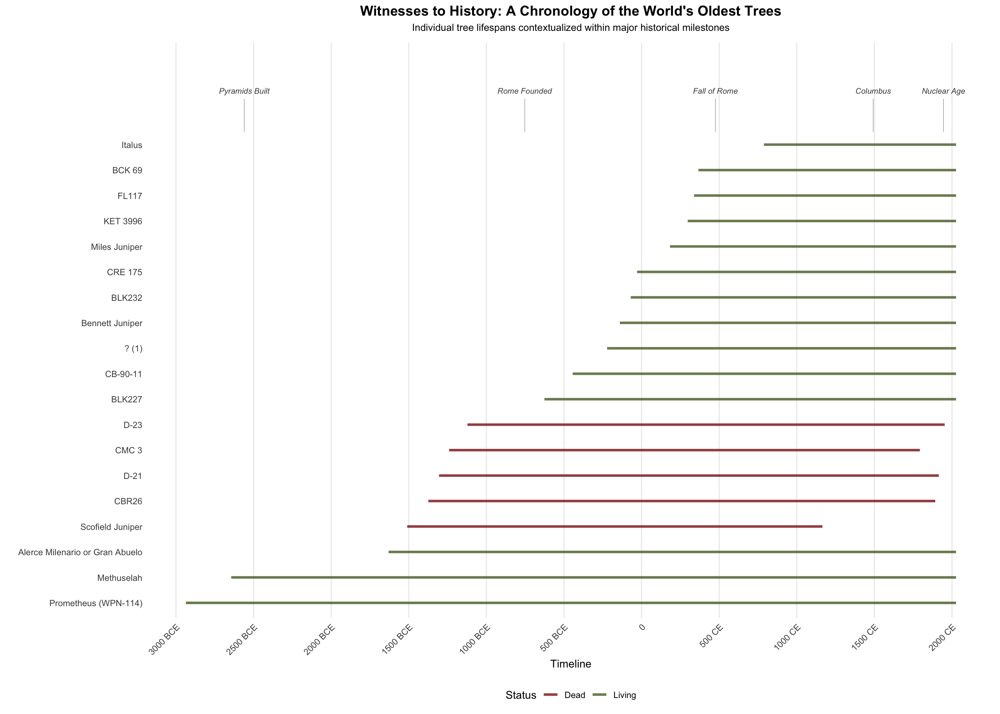
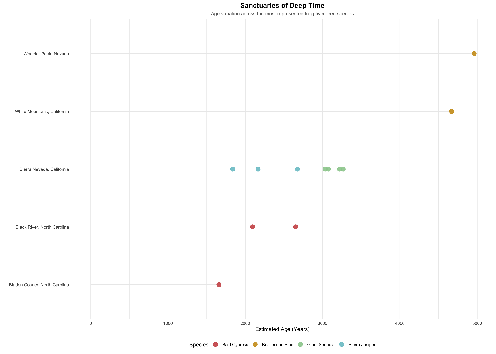
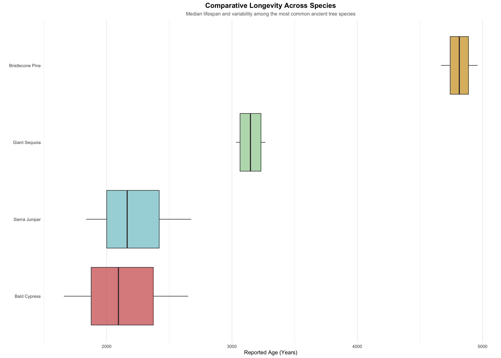

Ancient trees represent one of the most continuous living connections to the deep past, persisting across millennia of environmental change, climatic fluctuation, and human history. Unlike archaeological artifacts or written records, these organisms are not static remnants but ongoing biological systems whose lifespans extend far beyond the temporal scale of human institutions. Some of the oldest known specimens germinated before the rise of classical civilizations and remain alive today, functioning as living archives of ecological stability and resilience.
Longevity in trees is not randomly distributed across the plant kingdom but is concentrated within a small number of highly specialized species adapted to marginal environments. Harsh conditions - such as aridity, poor soils, or high elevation - often suppress competition and slow growth, enabling certain species to prioritize durability over rapid expansion. In this way, extreme age is less a product of ideal conditions than of ecological constraint, where survival depends on persistence rather than productivity.
# Load all required packages quietly
suppressMessages({
library(tidyverse)
library(rvest)
library(janitor)
})The dataset for this analysis is compiled from the Wikipedia page “List of oldest trees,” which aggregates verified and estimated ages of individual specimens across multiple species and geographic regions. The table includes tree names, species classifications, locations, reported ages, and germination dates, though the structure contains inconsistencies typical of crowd-sourced records.
To prepare the dataset for analysis, character fields are cleaned to remove citation artifacts and formatting irregularities, and species names are standardized to address inconsistent capitalization and concatenation. Tree status is inferred from descriptive notes, classifying each specimen as either “Living” or “Dead.” Reported ages are extracted as numeric values, while germination years are parsed and converted into a continuous timeline, with BCE dates represented as negative values.
Duplicate tree names are disambiguated to preserve unique identifiers, and observations lacking valid temporal data are removed. These steps transform a semi-structured descriptive table into a consistent dataset suitable for chronological comparison and species-level analysis, while still reflecting the inherent limitations of historical and biological estimation.
# ---- 1. Scrape table ----
url <- "https://en.wikipedia.org/wiki/List_of_oldest_trees"
trees_raw <- read_html(url) %>%
html_node("table.wikitable") %>%
html_table(fill = TRUE) %>%
clean_names()
# ---- 2. Clean table ----
trees_final <- trees_raw %>%
mutate(
# Standardize tree names
name = str_trim(name),
name = str_replace_all(name, "([a-z])(\\()", "\\1 \\2"),
# Fix species "squashing"
species = str_replace_all(species, "([a-z])([A-Z])", "\\1 / \\2"),
# Clean citation noise (ex. [1])
across(where(is.character), ~str_remove_all(., "\\[.*?\\]"))
) %>%
mutate(
# Define tree status
status = ifelse(str_detect(notes, "(?i)dead"), "Dead", "Living"),
# Extract ages
reported_age = as.numeric(str_extract(str_remove_all(age_years, ","), "\\d+")),
# Handle BCE years
raw_num = as.numeric(str_extract(year_germinated, "\\d+")),
germination_year = case_when(
str_detect(year_germinated, "BC|BCE") ~ raw_num * -1,
TRUE ~ raw_num
)
) %>%
# Fix duplicate names
group_by(name) %>%
mutate(name = if (n() > 1) {
paste0(name, " (", row_number(), ")")
} else {
name
}) %>%
ungroup() %>%
# Clean-up
filter(!is.na(germination_year), !is.na(reported_age)) %>%
select(name, species, location, country, germination_year, reported_age, status)
head(trees_final)## # A tibble: 6 × 7
## name species location country germination_year reported_age status
## <chr> <chr> <chr> <chr> <dbl> <dbl> <chr>
## 1 Prometheus (WPN… Great … Wheeler… United… -2936 4960 Living
## 2 Methuselah Great … White M… United… -2644 4668 Living
## 3 Alerce Milenari… Patago… Cordill… Chile -1630 3655 Living
## 4 CBR26 Giant … Sierra … United… -1374 3266 Dead
## 5 D-21 Giant … Sierra … United… -1305 3220 Dead
## 6 D-23 Giant … Sierra … United… -1122 3075 DeadWhen situated along a unified timeline, the lifespans of the world’s oldest trees reveal a scale of continuity that contrasts with the episodic nature of human history. In this dataset, individual specimens span nearly four millennia - with germination dates ranging from approximately 2900 BCE to the early medieval period. The oldest recorded tree exceeds 4,900 years in age, while the median lifespan across all observations is close to 2,500 years, showing that extreme longevity is common within this group rather than limited to a single outlier.
Several living trees predate major civilizational milestones that are often treated as foundational in historical narratives. Two specimens were already established before the construction of the Egyptian pyramids, and eight predate the traditional founding of Rome. By the end of the classical era - represented here by the fall of Rome in 476 CE - the majority of trees in the dataset (18 out of 19) had already germinated. These organisms do not simply intersect with human history; they persist across nearly its entire recorded span.
The distribution of ages reinforces this pattern. All sampled trees exceed 1,000 years in age, with 14 surpassing 2,000 years and 7 exceeding 3,000 years. Most of these individuals remain alive today, indicating that extreme age is not only a feature of the past but an ongoing biological condition. Rather than existing as relics, these trees continue to function as living systems whose lifespans connect ancient and modern worlds.
# ---- 1. Define historical milestones ----
milestones <- data.frame(
year = c(-2560, -753, 476, 1492, 1945),
event = c("Pyramids Built", "Rome Founded", "Fall of Rome",
"Columbus", "Nuclear Age")
)
# ---- 2. Pre-process to cap "Living" lifelines at the current year ----
trees_plot <- trees_final %>%
mutate(
# If living, end at 2026; if dead, end at germination + age
end_year = if_else(status == "Living", 2026, germination_year + reported_age)
)
# ---- 3. Set height for the milestone "shelf" ----
top_tree <- nrow(trees_plot)
shelf_height <- top_tree + 2
# ---- 4. Plot ----
ggplot(trees_plot) +
# Tree lifeline
geom_segment(aes(x = germination_year,
xend = end_year,
y = reorder(name, germination_year),
yend = name,
color = status),
linewidth = 1.2, alpha = 0.8) +
# Vertical lines connecting dates to labels
geom_segment(data = milestones,
aes(x = year, xend = year, y = top_tree + 0.5, yend = shelf_height - 0.2),
linetype = "solid", color = "grey70", linewidth = 0.3) +
# Single horizontal line for labels
geom_text(data = milestones,
aes(x = year, y = shelf_height, label = event),
size = 2.8, color = "grey30", fontface = "italic", vjust = 0) +
scale_color_manual(values = c("Living" = "darkolivegreen", "Dead" = "firebrick4")) +
theme_minimal() +
labs(
title = "Witnesses to History: A Chronology of the World's Oldest Trees",
subtitle = "Individual tree lifespans contextualized within major historical milestones",
x = "Timeline",
y = "",
color = "Status"
) +
theme(
plot.title = element_text(hjust = 0.5, face = "bold", size = 14),
plot.subtitle = element_text(hjust = 0.5, size = 10, margin = margin(b = 10)),
axis.text.x = element_text(angle = 45, hjust = 1),
panel.grid.major.y = element_blank(),
panel.grid.minor = element_blank(),
legend.position = "bottom"
) +
expand_limits(y = shelf_height + 2) +
scale_x_continuous(
breaks = seq(-3000, 2000, 500),
labels = c("3000 BCE", "2500 BCE", "2000 BCE", "1500 BCE", "1000 BCE",
"500 BCE", "0", "500 CE", "1000 CE", "1500 CE", "2000 CE")
)
The geographic distribution of ancient trees reveals that extreme longevity is not evenly dispersed but concentrated within specific ecological niches. In this dataset, the pattern is also geographically uneven, with 15 of 19 recorded specimens located in the United States and only a small number distributed across Canada, Chile, China, and Italy. Species such as bristlecone pine, giant sequoia, and bald cypress dominate the upper ranges of age, reflecting evolutionary strategies tailored to distinct environmental pressures. Giant sequoias account for the largest number of observations (4 trees), followed by bald cypress and Sierra juniper (3 each), while bristlecone pine, though represented by only 2 specimens, exhibits the highest recorded ages, reaching up to 4,960 years.
These species are often found in regions where growth is slow and competition is limited, conditions that favor long-term survival over rapid expansion. Rather than forming dense clusters, the oldest specimens tend to exist as isolated individuals or small populations, reinforcing the idea that extreme age is an outlier condition even within long-lived species. The environments that sustain them - high-altitude basins, floodplains, or protected groves - function as “refugia” where disturbance is minimized and ecological stability can persist across centuries.
The distribution also reflects a bias in documentation and preservation. Many of the most intensively studied ancient trees are located in protected areas or regions with established research infrastructure, and the strong concentration of observations within a single country suggests that the global record of extreme longevity may be incomplete. As a result, the observed pattern is both ecological and epistemological: it maps not only where ancient trees survive, but where they have been measured and recorded.
# ---- 1. Pre-process data ----
geo_data_final <- trees_final %>%
# Identify species names
mutate(
species_short = case_when(
str_detect(species, "(?i)longaeva") ~ "Bristlecone Pine",
str_detect(species, "(?i)giganteum") ~ "Giant Sequoia",
str_detect(species, "(?i)grandis") ~ "Sierra Juniper",
str_detect(species, "(?i)distichum") ~ "Bald Cypress",
str_detect(species, "(?i)sempervirens") ~ "Coast Redwood",
str_detect(species, "(?i)Fitzroya") ~ "Alerce",
TRUE ~ "Other"
),
# Standardize tree location names
location_clean = location %>%
str_replace_all("\\s*\\(([^)]+)\\)", ", \\1") %>%
str_replace_all(",\\s+", ",") %>%
str_extract("[^,]+,[^,]+$") %>%
str_replace(",", ", ") %>%
str_trim()
) %>%
# Only retain species with 2 or more specimines
group_by(species_short) %>%
filter(n() >= 2 & species_short != "Other") %>%
ungroup()
# ---- 2. Plot ----
ggplot(geo_data_final, aes(x = reported_age, y = reorder(location_clean, reported_age), color = species_short)) +
geom_segment(aes(x = 0, xend = reported_age, y = location_clean, yend = location_clean),
color = "grey92", linewidth = 0.5) +
geom_point(size = 4, alpha = 0.9) +
# Manual color assignment
scale_color_manual(values = c(
"Bristlecone Pine" = "goldenrod3",
"Giant Sequoia" = "darkseagreen3",
"Sierra Juniper" = "cadetblue3",
"Bald Cypress" = "indianred3"
)) +
theme_minimal() +
labs(
title = "Sanctuaries of Deep Time",
subtitle = "Age variation across the most represented long-lived tree species",
x = "Estimated Age (Years)",
y = "",
color = "Species"
) +
theme(
legend.position = "bottom",
plot.title = element_text(face = "bold", size = 14, hjust = 0.5),
plot.subtitle = element_text(size = 10, color = "grey40", hjust = 0.5),
panel.grid.major.y = element_blank(),
axis.text.y = element_text(size = 9)
)
While all species in this subset are capable of exceptional age, their longevity profiles differ in both central tendency and variability. Some, such as bristlecone pine, exhibit consistently high ages, with a mean lifespan exceeding 4,800 years and a maximum of 4,960 years, indicating a stable and well-adapted survival strategy. Others, such as giant sequoia, display slightly lower but still substantial ages, with an average around 3,150 years and a maximum of 3,266 years, while Sierra juniper and bald cypress fall closer to the 2,100–2,200 year range on average.
These differences reflect underlying biological trade-offs. Species that achieve great age often do so through slow growth, dense wood, and resistance to environmental stressors such as drought, disease, and temperature extremes. However, these traits do not guarantee uniform outcomes; even within favorable species, most individuals do not reach the upper limits of observed lifespan. This is also reflected in the small number of specimens per species in this dataset, ranging from two to four individuals, which highlights that extreme age is observed rather than typical.
The boxplot demonstrates that longevity is not a fixed species trait but a probabilistic outcome shaped by both genetics and environment. The oldest trees, therefore, should be understood not as typical representatives of their species, but as rare survivors at the extreme tail of a broader distribution.
ggplot(geo_data_final, aes(x = reported_age, y = reorder(species_short, reported_age, FUN = median), fill = species_short)) +
# The Boxplot shows the median and quartiles
geom_boxplot(alpha = 0.7, outlier.colour = "black", outlier.shape = 1) +
# Manual color assignment
scale_fill_manual(values = c(
"Bristlecone Pine" = "goldenrod3",
"Giant Sequoia" = "darkseagreen3",
"Sierra Juniper" = "cadetblue3",
"Bald Cypress" = "indianred3"
)) +
theme_minimal() +
labs(
title = "Comparative Longevity Across Species",
subtitle = "Median lifespan and variability among the most common ancient tree species",
x = "Reported Age (Years)",
y = "",
fill = "Species"
) +
theme(
legend.position = "none",
plot.title = element_text(face = "bold", size = 14, hjust = 0.5),
plot.subtitle = element_text(size = 10, color = "grey40", hjust = 0.5),
panel.grid.major.y = element_blank()
)